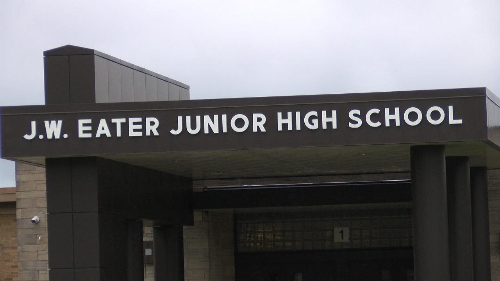

This page will Show Student Council Home and what are values are. If you have any suggestions for Student Council Feel free to tell us with this
suggestion form.
J.W.Eater
Here at J.W. Eater Student Council our mission is to grow leaders through Organizing and running events that benefit the
Student Body and Rantoul Community. Let us know how we are doing and if there is an event you are intested in seeing at Eater!J.W. Eater Junior High Main Page
Student Council Leader Attributes
1 Influlence=Leadership
2 Responsibility3 Caring4 Respectful5 Ownership6 Motivated7 Kind8 On Task9 Genuine10 Charismatic/Funny
Selena Orozco My name is Selena Orozco, My main Hobbies are drawing, sketching or anything crafty, Mainly I really love horror games. My favorite subject is Art and PE depending on the activity we are doing. I have many favorite animals But I'll just name my favorites here. My main favorite animals are the Barn Owl, Axolotl, and Cobra.
Goals
Mason Grant Hi my name is Mason, I am a 7th grade student. I like Math and STEM. I like to ride my bike and walk dogs. My favorite sport is football and swimming. I love to cook and paint.
Goals
Cody Culbertson Hi, my name is Cody Culbertson and I like to read, play my saxophone, and study math. I also love to wrestle, as well as playing baseball. In the future, I would like to be an Engineer, or a scientist.
Goals
Nicolas Francisco Hernandez My name is Nicolas. I like the color blue, enjoy reading books, and to listen/play music. I also enjoy talking to people and getting to know them.
Goals
Jennifer Hernandez Junez I am short and I'm good at math. I help out my friends because they need help for their grades. I also ride the bus, I have a silly personality, and I have a serious personality.
Goals
Darinel Sebastian Francisco I'm Darinel and I love math, writing, cooking, the color light/sky blue, video games, my family, and Mr.Titus(7th grade Social Studies teacher). I am Clever, Caring, Funny, Annoying, and Responsible. I am from the United States, I speak Spanish and My birthday is on January 14.
Goals
Derrek Souva My name is Derrek Souva and I like wrestling, AEW (wrestling) and my family. I also love my dogs Trish and Rico my favorite wrestler ever is Kenny Omega.
Goals
 My name is Selena Orozco, My main Hobbies are drawing, sketching or anything crafty, Mainly I really love horror games. My favorite subject is Art and PE depending on the activity we are doing. I have many favorite animals But I'll just name my favorites here. My main favorite animals are the Barn Owl, Axolotl, and Cobra.
Goals
My name is Selena Orozco, My main Hobbies are drawing, sketching or anything crafty, Mainly I really love horror games. My favorite subject is Art and PE depending on the activity we are doing. I have many favorite animals But I'll just name my favorites here. My main favorite animals are the Barn Owl, Axolotl, and Cobra.
Goals